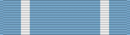

Service awardUN
For service with an approved United Nations mission.
Check your eligibility and build your ribbon rackYou earn this by meeting the requirements. No recommendation is needed. If it's missing from your record, current members can have their MPF add it. Veterans can request it from AFPC with a Standard Form 180 and supporting documents.
Awarded to service members who are or have been in United Nation service with one of the following:
UN Observation Group in Lebanon
UN Truce Supervision Organization in Palestine
UN Military Observer Group in India and Pakistan
UN Security Forces, Hollandia
UN Transitional Authority in Cambodia
UN Advance Mission in Cambodia
UN Protection Force in Yugoslavia
UN Mission for the Referendum in Western Sahara
UN Operations in Somalia, to include US Quick Reaction Force members
UN Iraq/Kuwait Observation Group
UN Mission in Haiti
The UN Secretary General determines amount of service required and individual eligibility. Military personnel presently serving or who have served are awarded the United Nation Medal in the field by the UN Secretary General's senior representative.
Service Star
Source: United Nations Medal fact sheet, Air Force's Personnel Center